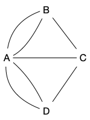
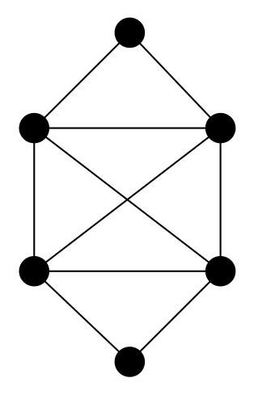
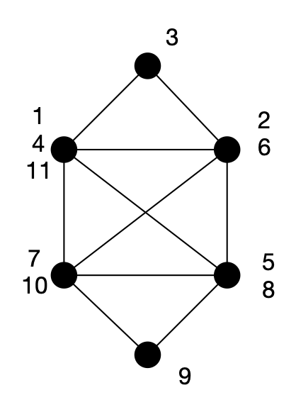
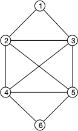
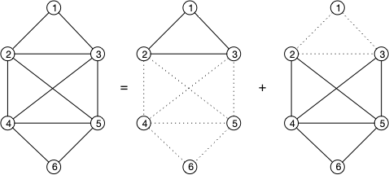
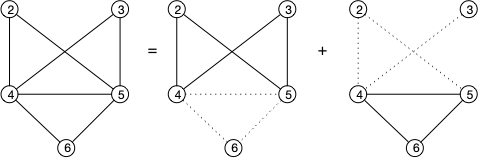
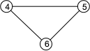

Parcours Eulériens
Voir grâce à l'exemple des circuits eulériens ce qu'est un chemin, un cycle, et nos premiers algorithmes de graphes.
Le problème concret ou "comment ne pas aller se promener"
C'est un retour aux sources s'il l'on peut dire puisqu'il s'agit du problème des 7 ponts de Königsberg, qui permit à Euler d'inventer la théorie des graphes pour éviter d'aller se balader.
La ville de Kaliningrad (anciennement appelée Königsberg) possédait 7 ponts aux 18ème siècle qui enjambent la Pregel. Ca ressemblait un peu à ça (cliquez pour voir les 7 ponts en vrai):

L'histoire veut qu'une tradition bourgeoise (et noble) de l'époque soit de faire les ballades digestives autour de ces ponts en essayant de tous les traverser une fois et de revenir à son point de départ.
Personne n'y arrivant, le jeu devint fort populaire. Sauf qu'Euler, s'il y a bien une chose qu'il n'aimait pas, c'était les ballades.
Du coup, un après-midi, plutôt que d'aller se balader il griffonna le schéma suivant sur un coin de nappe et démontra à l'assistance médusée qu'il était impossible de faire ce qu'ils voulaient faire et que donc il préférait reprendre un peu de tarte que d'essayer un truc impossible.
Euler avait d'un coup prix 1kg et inventé la théorie des graphes. Le dessin qu'Euler griffonna était celui-ci :

C'est un multi-graphe non orienté et est une modélisation du problème, les sommets $A$, $B$, $C$ et $D$ représentant les quatre berges de la ville et les arêtes les 7 ponts.
Le problème revient maintenant de trouver un cycle qui passe par toutes les arêtes du multi-graphe.
Problème de graphe
Définition
Soit $G= (V, E)$ un multi-graphe non orienté. Un cycle eulérien de $G$ est un cycle passant par toutes les arêtes du graphe.
Comme les arêtes d'un cycle n'y apparaissent qu'une seule fois, un cycle eulérien passe exactement une fois par toutes les arêtes du graphe.
C'est impossible dans l'exemple
Avec notre graphe c'est impossible car il faut pouvoir repartir d'un sommet après en être arrivé. Si $u_0\dots u_m$ était un tel cycle ($u_0 = u_m$) alors pour tout $u_i$ on aurait que $u_{i-1}u_i$ (pour $0< i$) et $u_iu_{i+1}$ (pour $i < m$) seraient des arêtes du graphes. Comme le chemin passe une seule fois par chaque arête toutes les arêtes de $u_i$ sont dans le cycle et on en conclut que $\delta(u_i)$ est paire.
Comme $\delta(C) = 3$ et est impair, il est impossible de trouver un cycle eulérien dans notre graphe.
Une implication
La remarque précédente nous donne une implication importante :
Proposition
S'il existe un cycle eulérien pour un multi-graphe non-orienté $G$, alors tout sommet de ce graphe est de degré pair.
La réciproque sur un exemple ?
Le graphe suivant a tous ses degrés pair :

Pouvez-vous trouver un cycle eulérien ?
solution
solution
Oui c'est possible avec l'ordre dans lequel examiner les sommets du chemin.

Mais il y en a plein d'autres possibles !
Equivalence
Ce qui est très beau c'est que la réciproque complète est vraie. On a le théorème suivant :
Proposition
Un multi-graphe non orienté connexe admet un cycle eulérien si et seulement si le degré de tout ses sommets est pair.
démonstration ⇒
démonstration ⇒
On l'a déjà prouvé, mais refaisons le pour la complétion.
Si un cycle Eulérien $u_0 \dots u_k$ existe, à chaque $u_i$ : $u_{i-1}u_i$ et $u_iu_{i+1}$ sont des arêtes du graphes. Comme le chemin passe une seule fois par chaque arête du graphe, à chaque fois que l'on rencontre un sommet donné $x$, on lui trouve 2 nouvelles arêtes. On en conclut que $\delta(x)$ est égal au nombre de fois où $x$ apparaît dans le cycle fois 2 : c'est donc pair.
démonstration ⇐
démonstration ⇐
- Comme notre graphe est eulérien et connexe, les degrés de tous les sommets sont pairs et strictement positif : donc supérieur ou égal à 2. Il existe alors un cycle dans notre graphe.
- en supprimant le cycle du graphe, on obtient toujours un graphe dont les degrés sont pairs (en supprimant un cycle on a supprimé un nombre pair d'arête pour chaque sommet apparaissant dans le cycle)
- on supprime tous les sommets de degrés 0.
- on est ramené à notre hypothèse de départ, c'est à dire un graphe où tous les sommets sont de degrés pairs et strictement positif.
L'algorithme ci-dessus nous permet de décomposer notre graphe en une série de cycles, disons qu'il y en a $m$. Il nous reste à former un énorme cycle à partir de ces petits cycle.
Pour cela, comme le graphe est connexe il va exister deux cycles $C_1$ et $C_2$ qui partagent un sommet $x$. On peut alors faire commencer les cycles $C_1$ et $C_2$ par $x$ et on peut coller les deux cycles ensemble en formant le cycle : $C_1 + C_2[1:]$. On est passé de $m$ cycles à $m-1$ cycles et on peut recommencer la procédure jusqu'à n'obtenir qu'un unique cycle qui est notre cycle eulérien.
Trouver un cycle Eulérien
On va se restreindre aux graphes non-orienté. Pour cela, notre codage par dictionnaire fonctionne tout à fait. Prenons par exemple le graphe :

Nous n'allons pas encore nous préoccuper d'encodage du graphe pour les algorithmes : on utilisera celui (ou ceux !) qui impliquera la plus petite complexité.
Principe de l'Algorithme
La démonstration de la réciproque nous donne un algorithme de construction d'un cycle Eulérien pour un graphe $G = (V, E)$ vérifiant les conditions du théorème d'existence de cycle Eulérien :
cycles = []
tant que G est non vide:
soit c un cycle de G
ajoute c à la liste cycles
supprimer les arêtes de c dans G
supprimer les sommets de degré 0 dans G
on concatène les cycles de la liste en un seul cycle qui est eulérien1ère itération
En prenant $1231$ comme premier cycle :

2ème itération
En prenant $35243$ comme second cycle :

3ème itération
Enfin, le troisième cycle est $4564$ :

Une fois le graphe vidé, on concatène les cycles ensemble en collant deux à deux des cycles ayant un élément en commun. Ici, en commençant par concaténer le second $43524$ et troisième cycle $4564$ ensemble en $43524564$. On peut ensuite rajouter le premier cycle faisant commencer le cycle $43524564$ par deux $24564352$ puis en les collant ensemble $24564352312$ pour donner le cycle eulérien final.
Gestion des cycles
Trouver un cycle peut se faire en utilisant l'algorithme du cours cycle_non_orienté(G,x) (même s'il n'est pas optimal, pour de petits graphes le temps de calcul ne sera pas rédhibitoire). Il faut juste trouver un sommet de départ. Si on s'arrange pour supprimer du graphe les sommets sans arêtes, on peut prendre n'importe lequel.
Après itération des cycles, j'obtient la liste de cycles :
Pour concaténer deux cycles ensemble, il faut pouvoir faire commencer deux cycles par le même sommet par un sommet donné x. Si le cycle est représenté par sa liste $c = [x_0, \dots, x_p]$ avec $x_0 = x_p$ il suffit de faire un décalage de liste. Par exemple le cycle commençant en $x_i$ est :
Puis coller deux cycles $c_1$ et $c_2$ par un sommet commun x (le premier et les dernier) :
Il suffit d'itérer le processus pour deux cycles en cherchant des cycles ayant un élément en commun. Commençons par concaténer les deux derniers cycles de la liste par le sommet 4 :
Notre liste devient :
On procède de même en concaténant nos cycle avec le sommet 3 :
Algorithme optimal
TBD à finir.
On utilise l'algorithme de Hierholzer
- Construction d'un premier cycle élémentaire : partir d'un sommet arbitraire et suivre des arêtes non encore utilisées jusqu'à revenir nécessairement à ce sommet (c'est garanti par la parité des degrés — chaque fois qu'on entre dans un sommet autre que le départ, il reste une arête pour en sortir).
- Extension du circuit : tant qu'il existe un sommet du circuit courant ayant des arêtes non utilisées, on part de ce sommet, on construit un nouveau circuit avec les arêtes restantes (on pourra toujours retomber sur le sommet d'origine !), et on l'insère dans le circuit courant à cet endroit.
- On répète jusqu'à épuisement de toutes les arêtes.
TBD complexité en nombre d'arête si on peut insérer facilement des élément dans les listes (via liste chaînée) .
Généralisations
Il existe de nombreuses généralisations aux cycles eulérien. Citons en trois : les chemins eulériens, les circuits eulériens des graphes orientés et les cycles Eulérien des graphes mixtes.
Chemin eulérien
Définition
Soit $G= (V, E)$ un multi-graphe non orienté. Un chemin eulérien entre $x$ et $y$ est un chemin entre $x$ et $y$ qui prend toutes les arêtes du graphe
Connaître les multigraphes qui possèdent un chemin eulérien est facile à partir de la caractérisation des graphes eulérien :
Proposition
Un multi-graphe non orienté $G= (V, E)$ possède un chemin eulérien entre deux de ses sommets $x$ et $y$ si et seulement si :
- les degrés des sommets $x$ et $y$ sont impair
- les degrés des autres sommets sont tous pair.
preuve
preuve
Un multigraphe possède un chemin eulérien si et seulement si $G'= (V, E \cup \{xy\})$ possède un cycle eulérien.
Graphes orientés
Définition
Soit $G= (V, E)$ un multi-graphe orienté. Un circuit eulérien de $G$ est un circuit passant par tous les arcs du graphe.
La encore les multi-graphes orientés qui possèdent un circuit eulérien est facile à partir de la caractérisation des graphes eulérien :
Proposition
Un multi-graphe orienté $G= (V, E)$ possède un circuit eulérien si et seulement si on a $\delta^+(x) = \delta^-(x)$ pour tout sommet $x$.
preuve
preuve
Tout circuit rentre et sort de chaque sommet du cycle, on a donc clairement que l'existence d'un circuit eulérien implique $\delta^+(x) = \delta^-(x)$ pour tout sommet $x$.
Réciproquement, l'exercice sur les degrés d'un graphe orienté montre l'existence d'un circuit pour des graphes où $\delta^+(x) = \delta^-(x) \geq 1$ pour tout $x$.